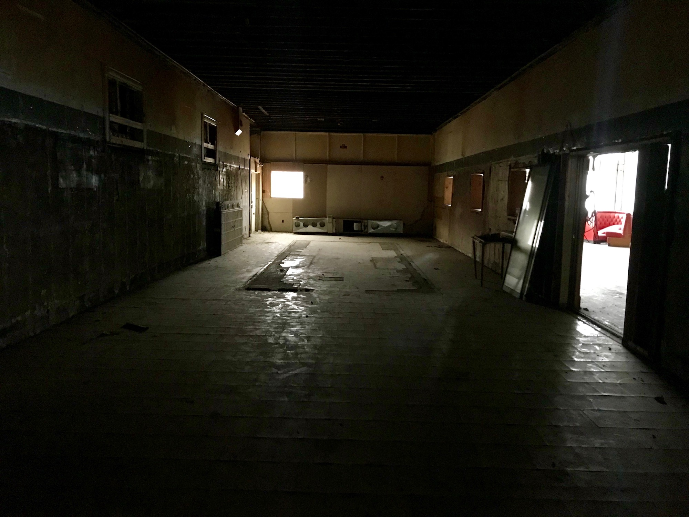
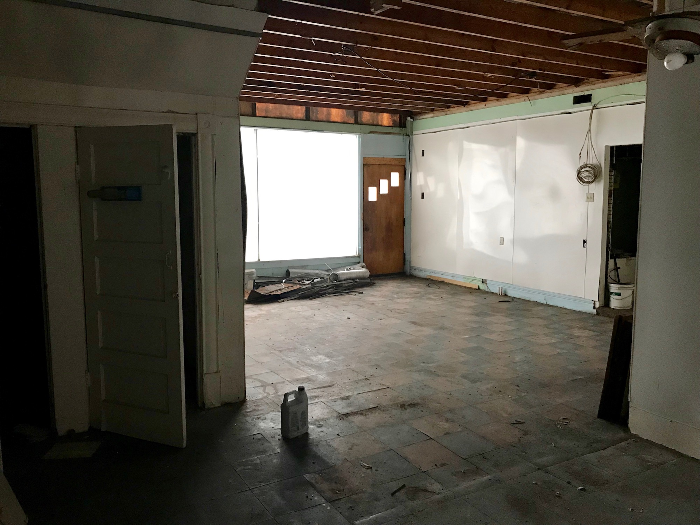
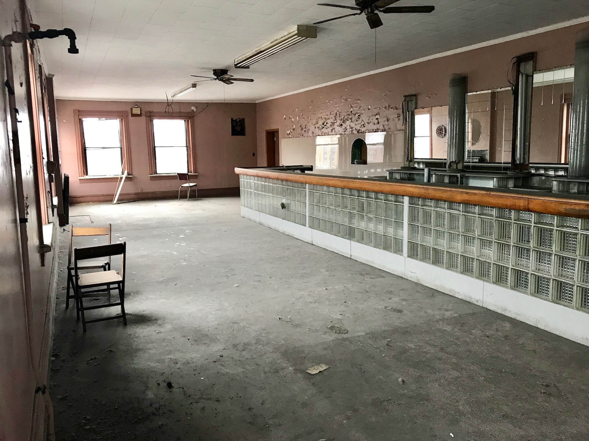
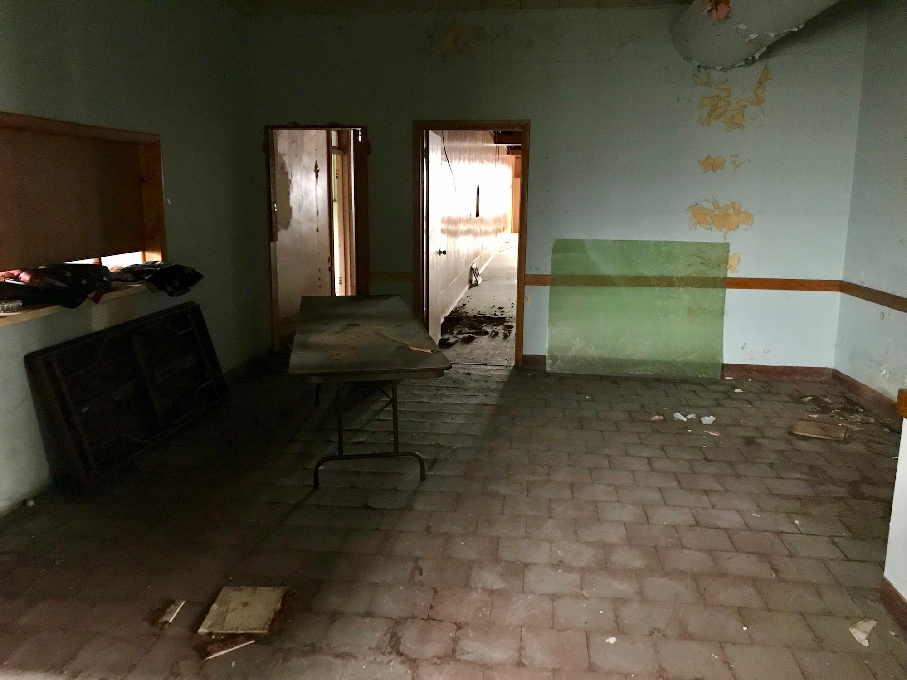
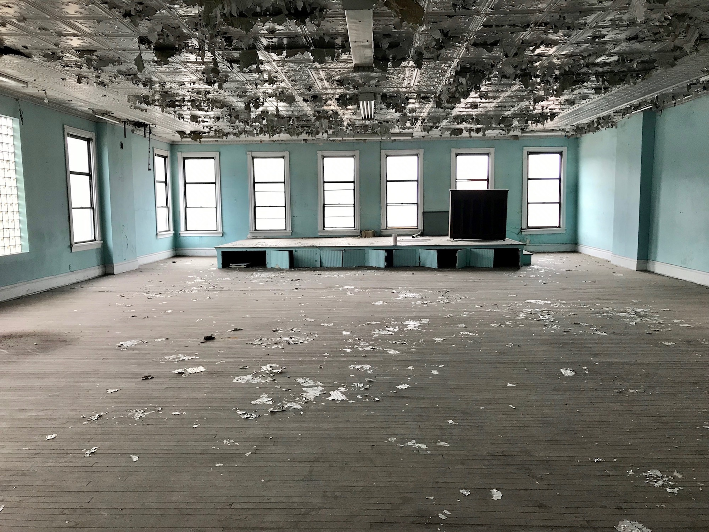

Riley Madelyn Roofing LLC of Kittanning finished a full replacement of the roof, meaning we will no longer have water leaking into the rear of the building each time it rains. This opens up the possibility of more heavy duty improvements to the interior of the building and -- crucially -- the ability to hook up electricity.
First Floor Brick Unveiling
4.1.2019
We are waiting on a roof replacement, but in the meantime, we can clean the plaster off of the first floor walls. These bricks haven't seen the light of day in decades!
Baseline Images
11.23.2018
We haven’t made much renovation progress yet, but here are some baseline images to show you the current state of the building. Maybe these will spark some memories! Share your own pictures with us at this link or via email.
First Floor
 Second Floor
 Third Floor
Attic
Inspecting the beams in the attic. The ceiling is about 10 feet tall at the apex.Basement
Shooting range in the basement.Exterior